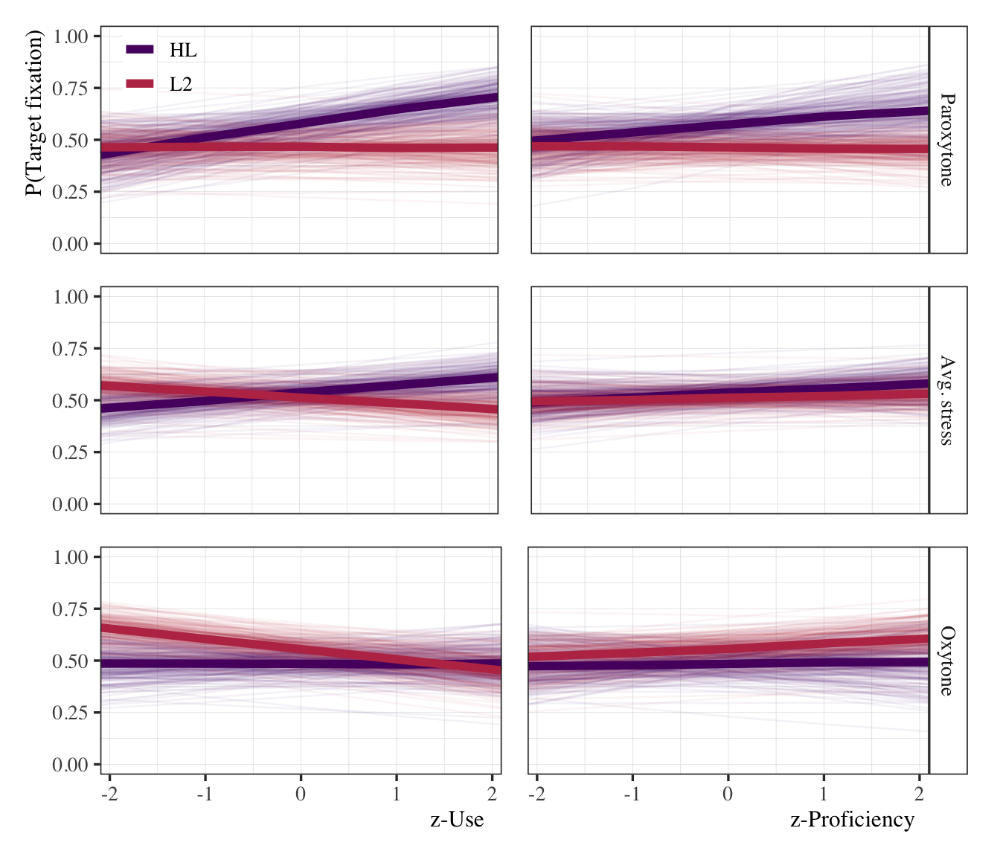
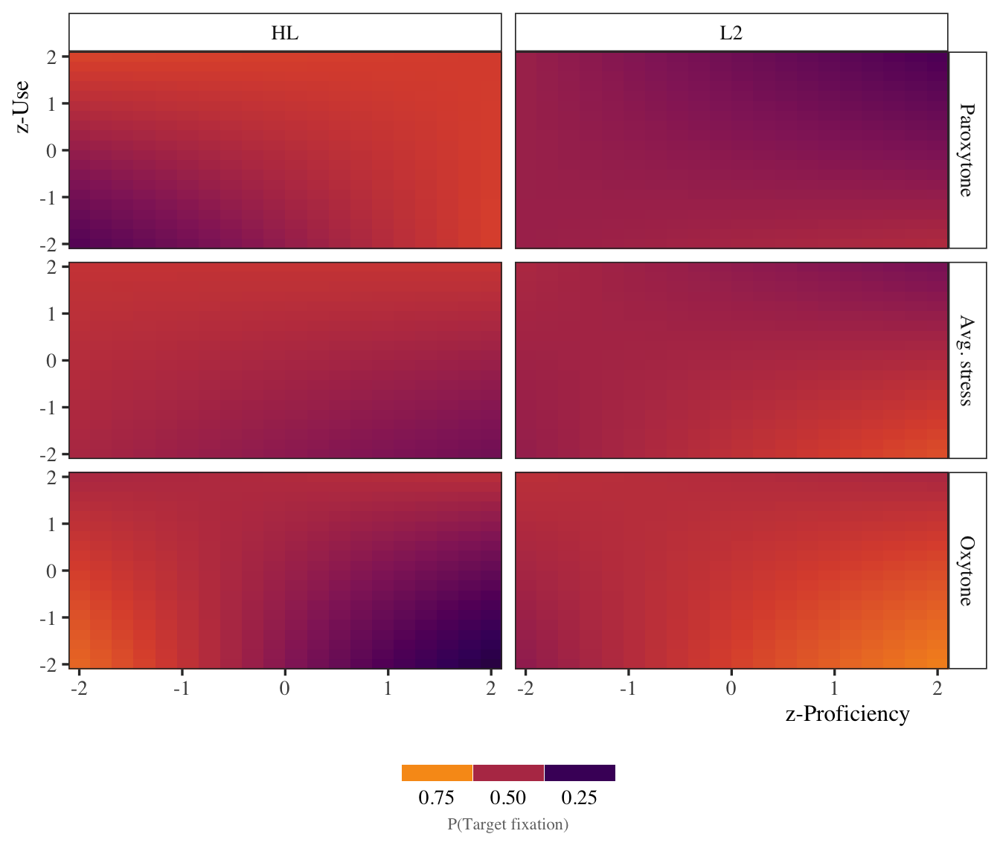

Code
# Load libraries and helpers
source(here::here("scripts", "00_libraries.R"))
source(here::here("scripts", "01_helpers.R"))
source(here::here("scripts", "04_load_data.R"))Beta regression
Load everything we need for the analyses.
# Load libraries and helpers
source(here::here("scripts", "00_libraries.R"))
source(here::here("scripts", "01_helpers.R"))
source(here::here("scripts", "04_load_data.R"))# Create subset of data at target syllable offset (time_zero == 4)
# and calculate mean/se of target fixations for each group in each
# stress condition
bi_4_prop <- stress_50 %>%
filter(group != "Monolingual",
time_zero == 4) %>%
group_by(id, group, stress, use_z, prof_z) %>%
summarize(avg = mean(target_prop), se = std_err(target_prop),
test_max = avg + se, .groups = "drop") %>%
mutate(group_sum = if_else(group == "HL", -1, 1),
stress_sum = if_else(stress == "Paroxytone", -1, 1))# Model formula
beta_reg_formula <- bf(
family = zero_inflated_beta(
link = "logit",
link_phi = "log",
link_zi = "logit"),
avg ~ 1 +
group_sum * stress_sum * use_z * prof_z +
(1 + stress_sum | id),
phi ~ 1 + (1 | id),
zi ~ 1 + (1 | id)
)
# Get model default priors
get_prior(
formula = beta_reg_formula,
data = bi_4_prop
) %>%
as_tibble() %>%
select(prior, class, coef) %>%
knitr::kable(format = "pandoc")| prior | class | coef |
|---|---|---|
| b | ||
| b | group_sum | |
| b | group_sum:prof_z | |
| b | group_sum:stress_sum | |
| b | group_sum:stress_sum:prof_z | |
| b | group_sum:stress_sum:use_z | |
| b | group_sum:stress_sum:use_z:prof_z | |
| b | group_sum:use_z | |
| b | group_sum:use_z:prof_z | |
| b | prof_z | |
| b | stress_sum | |
| b | stress_sum:prof_z | |
| b | stress_sum:use_z | |
| b | stress_sum:use_z:prof_z | |
| b | use_z | |
| b | use_z:prof_z | |
| lkj(1) | cor | |
| cor | ||
| student_t(3, 0, 2.5) | Intercept | |
| student_t(3, 0, 2.5) | sd | |
| sd | ||
| sd | Intercept | |
| sd | stress_sum | |
| student_t(3, 0, 2.5) | Intercept | |
| student_t(3, 0, 2.5) | sd | |
| sd | ||
| sd | Intercept | |
| logistic(0, 1) | Intercept | |
| student_t(3, 0, 2.5) | sd | |
| sd | ||
| sd | Intercept |
# Set priors
beta_reg_prior <- c(
prior(normal(0, 0.5), class = "Intercept"),
prior(normal(0, 0.5), class = "Intercept", dpar = "phi"),
prior(logistic(0, 1), class = "Intercept", dpar = "zi"),
prior(normal(0, 0.2), class = "b"),
prior(student_t(3, 0, 2.5), class = "sd"),
prior(lkj(1), class = "cor")
)
# Sample priors
beta_reg_prior_predictive_check <- brm(
formula = beta_reg_formula,
prior = beta_reg_prior,
data = bi_4_prop,
cores = 4, backend = "cmdstanr",
sample_prior = "only",
file = here("models", "beta_reg", "beta_reg_prior_predictive_check")
)
# Simulate from priors and plot
prior_pred_heatmap <- bi_4_prop %>%
expand(id = "new", group_sum, stress_sum,
prof_z = -2:2, use_z = -2:2) %>%
add_epred_draws(beta_reg_prior_predictive_check,
allow_new_levels = T, ndraws = 100) %>%
ggplot() +
aes(x = prof_z, y = use_z, fill = .epred) +
facet_grid(stress_sum ~ group_sum) +
geom_tile() +
scale_fill_viridis_c() +
coord_cartesian(expand = F)
# Fit model
beta_reg_group_stress <- brm(
formula = beta_reg_formula,
prior = beta_reg_prior,
data = bi_4_prop,
cores = 4, backend = "cmdstanr", threads = threading(2),
iter = 12000, warmup = 2000, thin = 10,
control = list(adapt_delta = 0.9999, max_treedepth = 15),
file = here("models", "beta_reg", "beta_reg_group_stress")
)# plot
beta_reg_use_parox <- bi_4_prop %>%
expand(id = "new", group_sum, stress_sum = -1,
prof_z = 0, use_z = seq(-2.1, 2.1, length.out = 5)) %>%
add_epred_draws(beta_reg_group_stress,
allow_new_levels = T,
re_formula = NULL,
sample_new_levels = "uncertainty",
ndraws = 200) %>%
mutate(group = if_else(group_sum == -1, "HL", "L2")) %>%
ggplot() +
aes(x = use_z, y = .epred, color = group) +
geom_path(aes(group = interaction(group, .draw)), alpha = 0.05) +
stat_summary(fun = median, geom = "line", size = 2) +
scale_color_manual(name = NULL, values = my_colors[3:2]) +
coord_cartesian(ylim = c(-0.05, 1.05), xlim = c(-2.1, 2.1),
expand = F) +
labs(y = "P(Target fixation)", x = NULL) +
theme(legend.position = c(0.15, 0.85),
axis.ticks.x = element_blank(), axis.text.x = element_blank())
beta_reg_prof_parox <- bi_4_prop %>%
expand(id = "new", group_sum, stress_sum = -1,
prof_z = seq(-2.1, 2.1, length.out = 5), use_z = 0) %>%
add_epred_draws(beta_reg_group_stress,
allow_new_levels = T,
re_formula = NULL,
sample_new_levels = "uncertainty",
ndraws = 200) %>%
mutate(group = if_else(group_sum == -1, "HL", "L2"),
stress = "Paroxytone") %>%
ggplot() +
aes(x = prof_z, y = .epred, color = group) +
facet_grid(stress ~ .) +
geom_path(aes(group = interaction(group, .draw)), alpha = 0.05,
show.legend = F) +
stat_summary(fun = median, geom = "line", size = 2, show.legend = F) +
scale_color_manual(name = NULL, values = my_colors[3:2]) +
coord_cartesian(ylim = c(-0.05, 1.05), xlim = c(-2.1, 2.1),
expand = F) +
labs(y = NULL, x = NULL) +
theme(axis.ticks.y = element_blank(), axis.text.y = element_blank(),
axis.ticks.x = element_blank(), axis.text.x = element_blank())
beta_reg_use_avg <- bi_4_prop %>%
expand(id = "new", group_sum, stress_sum = 0,
prof_z = 0, use_z = seq(-2.1, 2.1, length.out = 5)) %>%
add_epred_draws(beta_reg_group_stress,
allow_new_levels = T,
re_formula = NULL,
sample_new_levels = "uncertainty",
ndraws = 200) %>%
mutate(group = if_else(group_sum == -1, "HL", "L2")) %>%
ggplot() +
aes(x = use_z, y = .epred, color = group) +
geom_path(aes(group = interaction(group, .draw)), alpha = 0.05,
show.legend = F) +
stat_summary(fun = median, geom = "line", size = 2, show.legend = F) +
scale_color_manual(name = NULL, values = my_colors[3:2]) +
coord_cartesian(ylim = c(-0.05, 1.05), xlim = c(-2.1, 2.1),
expand = F) +
labs(y = NULL, x = NULL) +
theme(axis.ticks.x = element_blank(), axis.text.x = element_blank())
beta_reg_prof_avg <- bi_4_prop %>%
expand(id = "new", group_sum, stress_sum = 0,
prof_z = seq(-2.1, 2.1, length.out = 5), use_z = 0) %>%
add_epred_draws(beta_reg_group_stress,
allow_new_levels = T,
re_formula = NULL,
sample_new_levels = "uncertainty",
ndraws = 200) %>%
mutate(group = if_else(group_sum == -1, "HL", "L2"),
stress = "Avg. stress") %>%
ggplot() +
aes(x = prof_z, y = .epred, color = group) +
facet_grid(stress ~ .) +
geom_path(aes(group = interaction(group, .draw)), alpha = 0.05,
show.legend = F) +
stat_summary(fun = median, geom = "line", size = 2, show.legend = F) +
scale_color_manual(name = NULL, values = my_colors[3:2]) +
coord_cartesian(ylim = c(-0.05, 1.05), xlim = c(-2.1, 2.1),
expand = F) +
labs(y = NULL, x = NULL) +
theme(legend.position = c(0.85, 0.85),
axis.ticks.y = element_blank(), axis.text.y = element_blank(),
axis.ticks.x = element_blank(), axis.text.x = element_blank())
beta_reg_use_ox <- bi_4_prop %>%
expand(id = "new", group_sum, stress_sum = 1,
prof_z = 0, use_z = seq(-2.1, 2.1, length.out = 5)) %>%
add_epred_draws(beta_reg_group_stress,
allow_new_levels = T,
re_formula = NULL,
sample_new_levels = "uncertainty",
ndraws = 200) %>%
mutate(group = if_else(group_sum == -1, "HL", "L2")) %>%
ggplot() +
aes(x = use_z, y = .epred, color = group) +
geom_path(aes(group = interaction(group, .draw)), alpha = 0.05,
show.legend = F) +
stat_summary(fun = median, geom = "line", size = 2, show.legend = F) +
scale_color_manual(name = NULL, values = my_colors[3:2]) +
coord_cartesian(ylim = c(-0.05, 1.05), xlim = c(-2.1, 2.1),
expand = F) +
labs(y = NULL, x = "z-Use")
beta_reg_prof_ox <- bi_4_prop %>%
expand(id = "new", group_sum, stress_sum = 1,
prof_z = seq(-2.1, 2.1, length.out = 5), use_z = 0) %>%
add_epred_draws(beta_reg_group_stress,
allow_new_levels = T,
re_formula = NULL,
sample_new_levels = "uncertainty",
ndraws = 200) %>%
mutate(group = if_else(group_sum == -1, "HL", "L2"),
stress = "Oxytone") %>%
ggplot() +
aes(x = prof_z, y = .epred, color = group) +
facet_grid(stress ~ .) +
geom_path(aes(group = interaction(group, .draw)), alpha = 0.05,
show.legend = F) +
stat_summary(fun = median, geom = "line", size = 2, show.legend = F) +
scale_color_manual(name = NULL, values = my_colors[3:2]) +
coord_cartesian(ylim = c(-0.05, 1.05), xlim = c(-2.1, 2.1),
expand = F) +
scale_y_continuous(position = "right") +
labs(y = NULL, x = "z-Proficiency") +
theme(legend.position = c(0.85, 0.85),
axis.ticks.y = element_blank(), axis.text.y = element_blank())
(beta_reg_use_parox + beta_reg_prof_parox) /
(beta_reg_use_avg + beta_reg_prof_avg) /
(beta_reg_use_ox + beta_reg_prof_ox)
# plot
bi_heat_map <- bi_4_prop %>%
expand(id = "new",
group_sum,
stress_sum = c(-1, 0, 1),
prof_z = seq(-2, 2, length.out = 20),
use_z = seq(-2, 2, length.out = 20)) %>%
add_epred_draws(beta_reg_group_stress,
allow_new_levels = T,
re_formula = NULL,
sample_new_levels = "uncertainty",
ndraws = 200
)
bi_heat_map %>%
mutate(group = if_else(group_sum == -1, "HL", "L2"),
stress = case_when(
stress_sum == -1 ~ "Paroxytone",
stress_sum == 0 ~ "Avg. stress",
TRUE ~ "Oxytone"
),
stress = as.factor(stress),
stress = fct_relevel(stress, "Paroxytone", "Avg. stress")) %>%
ggplot() +
aes(x = prof_z, y = use_z, fill = .epred) +
facet_grid(stress ~ group) +
geom_tile() +
scale_fill_viridis_c(name = NULL, option = "B") +
coord_cartesian(expand = F) +
labs(y = "z-Use", x = "z-Proficiency") +
clean_guide("bottom", "P(Target fixation)")